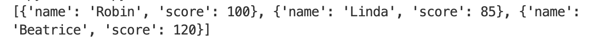
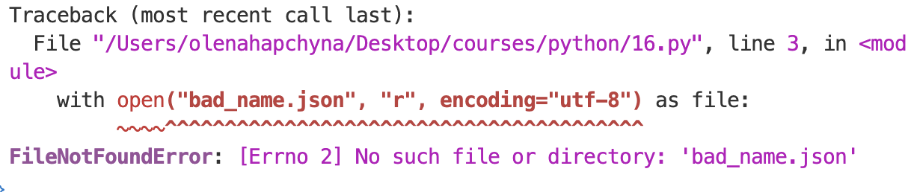
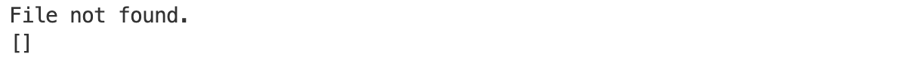
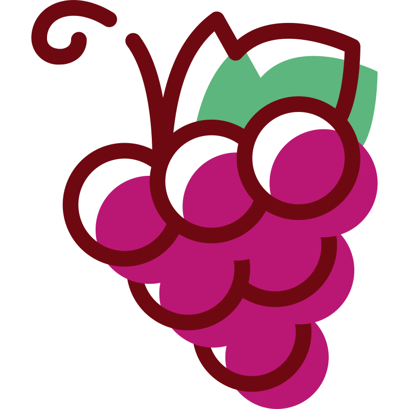
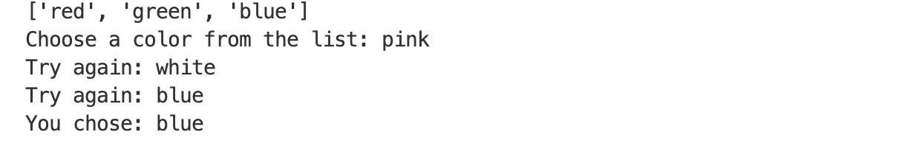
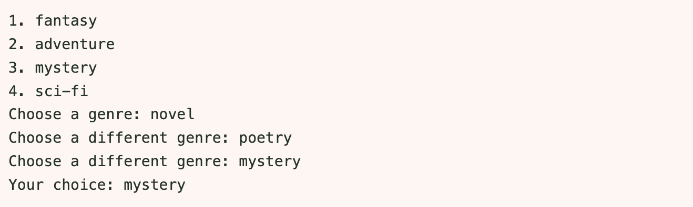

Основи JSON та читання файлів
Основи JSON та читання файлів
Що таке JSON?
JSON (JavaScript Object Notation) – це найпопулярніший у світі текстовий формат для зберігання даних та обміну даними. З ним працюють вебсайти, мобільні додатки та сервери.
Він дуже схожий на словники та списки в Python, але має кілька суворих правил:
- Ключі завжди беруться у подвійні лапки " ". Одинарні лапки ' ' використовувати заборонено.
- Текст (рядки) теж завжди у подвійних лапках.
- Останній елемент у списку чи словнику не повинен мати після себе коми.
Ось приклад типового JSON-файлу (scores.json), який зберігає дані гравців:
[
{"name": "Robin", "score": 100},
{"name": "Linda", "score": 85},
{"name": "Beatrice", "score": 120}
]Завдання 1
- Відкрий папку із цим проєктом у своєму редакторі коду (File → Open Folder).
- Поруч із твоїм файлом з кодом, створи новий файл і назви його words.json.
- Перемісти список слів зі змінної WORDS у файл words.json. Видали ту змінну із коду.
Як читати JSON-файли у Python
Щоб Python зрозумів формат JSON, нам потрібен спеціальний вбудований інструмент – модуль json. Його треба імпортувати на початку файлу.
Для відкриття файлів використовується конструкція with open(...) as file:. Вона зручна тим, що автоматично закриває файл після того, як ми закінчили з ним працювати.
Ще один критично важливий момент: оскільки наші слова містять українські літери (кирилицю), нам обов'язково треба вказати Python, як саме читати ці символи. Для цього використовується параметр encoding="utf-8".
Ось приклад того, як ми б читали файл scores.json:
import json
with open("scores.json", "r", encoding="utf-8") as file:
data = json.load(file)
print(data)
Пояснення:
- "scores.json" – назва файлу, який треба відкрити
- "r" – від слова read, тобто файл відкривається лише для читання
- json.load(file) – повертає нам вміст файлу (у цьому випадку як список зі словниками), який можна зберегти у змінну
Зверни увагу: в open("scores.json", ...) вказано лише назву файлу, без шляху (де конкретно на комп'ютері цей файл знаходиться). Тоді Python шукає його в тій папці, яку відкрито у VS Code (саме тому в Завданні 1 ми відкривали папку проєкту через File → Open Folder). Якщо файл лежить в іншій папці, Python його не знайде і видасть помилку.
Завдання 2
- Створи новий файл для цього та кількох наступних завдань.
- Імпортуй бібліотеку json.
- Спираючись на приклад коду вище, відкрий файл words.json та завантаж дані із нього у змінну words.
- Виведи цю змінну, щоб перевірити результат.
 Обробка помилок та функція load_words()
Обробка помилок та функція load_words()
Ловимо FileNotFoundError
Що станеться, якщо ми передамо функції назву файлу, якого не існує? Або якщо користувач випадково видалить words.json? Програма видасть помилку FileNotFoundError і зупиниться.
import json
with open("bad_name.json", "r", encoding="utf-8") as file:
data = json.load(file)
print(data)

Щоб цього уникнути, можна використати try/except. Ми можемо спробувати відкрити файл, а якщо його немає, вивести зрозуміле повідомлення і зберегти у змінній data порожній список.
Приклад:
import json
try:
with open("bad_name.json", "r", encoding="utf-8") as file:
data = json.load(file)
except FileNotFoundError:
print("File not found.")
data = []
print(data)
Кілька except та помилки формату
Що робити, якщо файл існує, але всередині нього допущена синтаксична помилка (наприклад, десь пропущена кома або лапки)?
У такому випадку файл успішно відкриється, але коли функція json.load() спробує його прочитати, вона не зможе цього зробити і програма видасть помилку json.JSONDecodeError.
Один блок try може мати кілька блоків except. Це дозволяє нам по-різному реагувати на різні типи помилок:
import json
try:
with open("scores.json", "r", encoding="utf-8") as file:
data = json.load(file)
except FileNotFoundError:
print("File not found.")
data = []
except json.JSONDecodeError:
print("There is a syntax error in the file.")
data = []
print(data)Хорошою практикою є враховувати обидві ці помилки при роботі з JSON-файлами.
Завдання 3
Відредагуй попередній код, додавши try та два except.
Тоді протестуй, чи все працює (наприклад, спершу навмисно зміни назву файлу на неправильну, і подивись, що вийде, тоді поверни правильну назву, але видали у файлі зі словами якусь кому).
Завдання 4
У тебе вже є код, який читає слова із файлу. Але щоб використати цей код в основному проєкті, треба перетворити його на функцію, яка приймає назву файлу, і повертає список слів (або порожній список в разі помилки).
Перероби поточний код на функцію load_words(file_name).
Для перевірки: виклич функцію, збережи її результат у змінну words, та надрукуй цю змінну.
Якщо все працює, перенеси цю нову функцію у файл із проєктом (одразу після функції main()), а її виклик – всередину main().

Рефакторинг основного проєктуВідмова від глобальних змінних
До цього моменту функція get_practice_words() брала дані напряму з глобальної змінної WORDS, яка знаходилася поза всіма іншими функціями. Це працює, але має недолік: функція "прив'язана" до однієї конкретної змінної. Ми не можемо дати їй інший список, а дивлячись на рядок get_practice_words(), не зрозуміло, з якими даними вона працює.
Тому зручніше, коли функції незалежні: вони працюють тільки з тими даними, які ми передаємо їм у дужках (через аргументи).
Подивись на різницю:
# ❌ Гірше (залежить від глобальної змінної PLAYERS):
def print_first_player():
print(PLAYERS[0])
# ✅ Краще (працює з будь-яким списком, який їй передадуть):
def print_first_player(player_list):
print(player_list[0])Крім того, після того як ми перенесли слова у JSON-файл, змінної WORDS більше не існує. Замість неї ми маємо нову змінну words всередині main(), в якій зберігається результат функції load_words() (список слів із файлу).
Завдання 5
Відредагуй функцію get_practice_words(), щоб вона приймала список слів як параметр (наприклад, word_list), та працювала далі з ним, а не з глобальною змінною.
Також потрібно дещо змінити виклик цієї функції в main().
Раннє повернення
Що робити, якщо load_words() не знайшла файл і повернула порожній список []? Якщо ми просто пустимо цей порожній список далі по програмі, вона почне питати "Скільки слів хочете тренувати?" (0 слів у списку), проситиме обрати режим, а потім просто миттєво закінчиться. Це поганий UX дизайн.
Якщо даних немає, програму треба зупинити ще до того, як вона почне щось робити. Для цього можна використати умову if та порожній return всередині main().
Коли ми пишемо просто return без нічого всередині функції (навіть якщо це функція main), вона негайно завершує свою роботу.
Ось приклад гри, яка не запускається, якщо немає гравців:
def start_game(players):
if len(players) == 0:
print("No players. Exiting...")
return # Функція зупиняється тут і не йде далі
print("You can start the game!")
players_list1 = []
start_game(players_list1) # -> No players. Exiting...
players_list2 = ["Mike", "Sandy"]
start_game(players_list2) # -> You can start the game!Завдання 6
Всередині функції main(), у потрібному місці, додай перевірку: якщо слів немає (тобто, довжина списку слів дорівнює нулю), надрукуй повідомлення "There are no words to practice. Exiting..." і додай порожній return.
Перевір, як це працює: навмисно зміни назву файлу в main() на неправильну (наприклад, "word.json") і запусти програму. Вона має м'яко повідомити про відсутність файлу і завершитися, не задаючи зайвих питань. Після тестування поверни правильну назву файлу.
Що ще можна додати
У функції limit_words не вистачає перевірки, чи введений ліміт не є нульовим, від'ємним або більшим за кількість слів у списку. Цю перевірку можна виконати з допомогою if, і, наприклад, вивести повідомлення "That's not a valid limit, I'll use the full list instead." і використати увесь список (limit = len(words)).
def limit_words(words):
print(f"\n📚 There are {len(words)} words in the list.")
limit_input = input("How many words would you like to practice? ")
try:
limit = int(limit_input)
except ValueError:
print("That's not an integer, I'll use the full list instead.")
limit = len(words)
# ⭐️ додай перевірку тут
return words[:limit]
 Домашнє завдання: Book Fair 📚
Домашнє завдання: Book Fair 📚
Нумерований список: range(len(...))
Кожен елемент списку має свій номер (індекс), і нумерація починається з 0:
pets = ["cat", "dog", "hamster"]
# 0 1 2
print(pets[0]) # cat
print(pets[2]) # hamsterlen(pets) повертає довжину списку (тут 3), а range(3) дає числа 0, 1, 2. Але люди рахують з 1, а не з 0. Тому при виведенні додаємо + 1 до номера:
for i in range(len(pets)):
print(f"{i + 1}. {pets[i]}")1. cat
2. dog
3. hamsterПеревірка in та not in
in перевіряє, чи є значення у списку. Результат – True або False:
colors = ["red", "green", "blue"]
print("red" in colors) # True
print("pink" in colors) # False
print("pink" not in colors) # TrueПовторюємо запитання через while
Якщо користувач ввів щось неправильне, треба спитати ще раз. Для цього:
- питаємо один раз до циклу;
- поки відповідь неправильна, питаємо знову всередині циклу.
answer = input("Do you like pizza? (yes / no): ")
while answer not in ["yes", "no"]:
answer = input("Please type yes or no: ")
print("Your answer:", answer)Коли користувач нарешті введе yes або no, умова answer not in [...] стане False, і цикл закінчиться.
Функція, яка отримує список і повертає результат
def ask_color(colors_list):
answer = input("Choose a color from the list: ")
while answer not in colors_list:
answer = input("Try again: ")
return answer # повертаємо правильну відповідь
my_colors = ["red", "green", "blue"]
print(my_colors)
result = ask_color(my_colors) # виклик функції зі списком my_colors
print("You chose:", result)
Зверни увагу: функція працює з будь-яким списком, який їй передали, а return віддає значення назовні, і ми зберігаємо його у змінну result.
Завдання
На книжковому ярмарку кожен жанр має свій стенд. Допоможемо відвідувачу обрати жанр.
У коді нижче є дві функції:
- print_list(items) – виводить усі жанри з номерами;
- choose_genre(genres_list) – питає жанр, доки користувач не введе правильний, і повертає його.
Заміни ❓ в коді на слова, яких не вистачає.
Очікування запуску...
Очікуваний результат:
